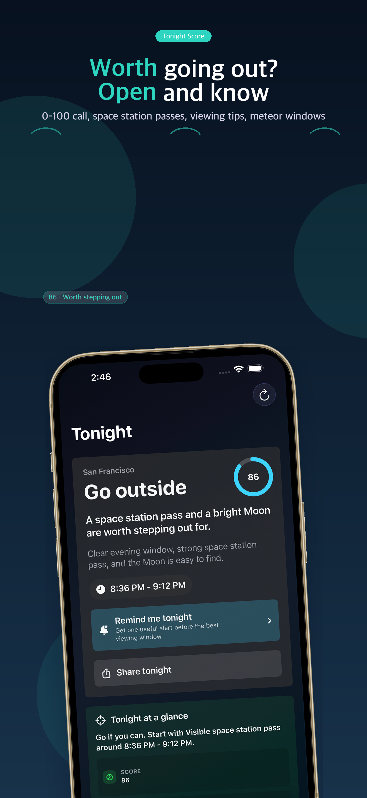

Tonight Score
See a practical score based on sky conditions, moonlight, space station visibility, Venus visibility, and seasonal meteor shower windows.
A simple iPhone and iPad sky guide that answers one practical question: is tonight worth stepping outside?
Open the app for a Tonight Score, a tonight timeline, the strongest naked-eye target, the best window, and quick viewing tips for space station passes, the Moon, Venus when visible, and meteor windows.
Built for quick naked-eye checks, Home Screen and Lock Screen widgets, rare useful alerts, and Shortcuts. English is the default language, with Korean localization included.

See a practical score based on sky conditions, moonlight, space station visibility, Venus visibility, and seasonal meteor shower windows.
See the current call, the viewing window, and one useful reminder in a simple order.
Know what to look for first, where to look, how long to try, and what to check before stepping out for space station passes, meteors, Venus, or the Moon.
Keep tonight's sky call on your Home Screen or Lock Screen, schedule reminders for strong viewing opportunities, and open Tonight Score or the 7-night outlook from Shortcuts.
The app works without an account or custom backend server. Choose a privacy-first starter city before granting location, switch to precise local results when you are ready, and switch back to starter-city sky calls from Settings later.
Use the app in English by default or with Korean localization, including store listing, widgets, alerts, and viewing guidance.
내 방 천문대는 복잡한 별자리 지도가 아니라, 오늘 밤 밖에 나가볼 만한지 빠르게 판단해 주는 별보기 앱입니다. 오늘 밤 점수, 오늘 밤 순서, 최고 대상, 빠른 관측 팁, 먼저 볼 곳, 몇 분 볼지, 나가기 전 체크, 보기 좋은 국제우주정거장(ISS) 통과, 보일 때의 금성 확인, 유성우 창, 위젯, 알림, 단축어를 중심으로 제공합니다. 위치 권한 없이 기본 도시를 고르고 먼저 시작할 수 있고, 위치를 허용한 뒤에도 설정에서 기본 도시 기준으로 다시 전환할 수 있으며, 계정 없이 영어 기본 설정과 한국어 현지화를 함께 제공합니다.